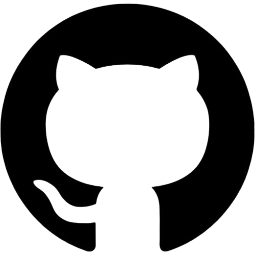

Sobre Mim
Olá! Meu nome é Taís Prates, sou natural de São Paulo, mas cresci e moro atualmente na Bahia. Desde criança, sempre fui curiosa quando se tratava de tecnologia, e essa curiosidade vem me acompanhando até hoje. Atualmente, estou no segundo semestre de Análise e Desenvolvimento de Sistemas, me aprofundando na área de Front-End e desenvolvendo projetos que compartilho no meu GitHub. Meu objetivo é me tornar uma desenvolvedora de software completa, atuando tanto no front-end, back-end e mobile, e ser capaz de agregar valor ao mercado da tecnologia.
Valores Pessoais
Acredito que o aprendizado contínuo é essencial para o crescimento e a evolução constantes. A tecnologia, assim como a vida, está sempre em transformação, e busco estar em constante evolução para me adaptar aos novos desafios que surgem. Valorizo a oportunidade de aprender com cada experiência, seja ela um sucesso ou um erro, pois acredito que esse processo é fundamental para o meu desenvolvimento, tanto profissional quanto pessoal.
Curiosidades e Personalidade
Apesar de estar me dedicando à área de tecnologia, sempre tive um grande interesse por arte e design. Acredito que esse lado criativo, embora ainda em desenvolvimento, pode me ajudar a ter uma abordagem única nos projetos de desenvolvimento. Além disso, sou apaixonada por anime e games. Aprecio histórias bem contadas e os mundos imersivos que esses universos criam, o que me inspira a sonhar em como construir experiências interativas e cativantes no campo da tecnologia.
Habilidades
- HTML
- CSS
- JavaScript (aprendendo)
- Python (iniciante)
- Git e GitHub
Contato
Você pode me encontrar nas redes sociais:
